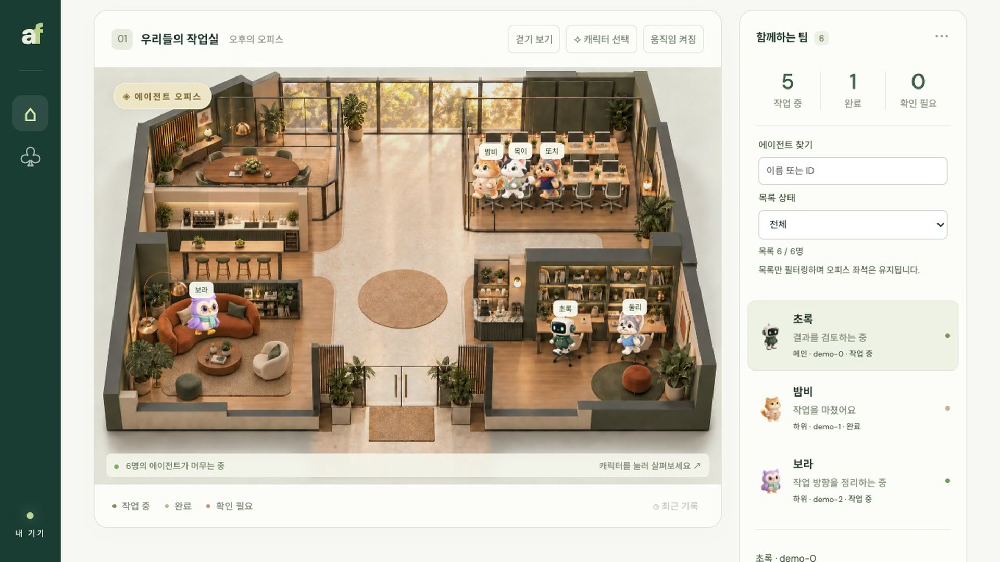

AI를 도입했는데,왜 조직의 역량은 축적되지 않는가?
에이전트 시대, 배우고 기억하는 기업을 설계하는 법
강정구, 라이너 AI 전략 총괄
AI가 새로운 기술 패러다임으로 자리잡고 있음
*IBM이 1981년 최초의 개인용 컴퓨터 IBM PC(모델 5150) 출시; **WWW 대중 공개 1993년; ***아이폰 2007년 6월 출시; ****ChatGPT(GPT-3.5) 2022년 11월 출시
글로벌·테크 경험 기반, K-AI 업계 최전선에서 혁신을 추진하고 있음
강정구, 라이너 AI 전략 총괄
Freechal
Kearney
Korea
Bain &
Company
LINE
Thailand
NAVER
kakao
Entertainment
kakao
Liner
AI Agents
서울대 경제학부
미국 미시간 대학 MBA
국민경제자문회의
AI경제 정책자문단 위원
K-AI 스타트업은 5개 영역에 걸쳐 글로벌 경쟁력을 높이고 있음
국민성장펀드 투자
- 리벨리온1.3조 원
- 퓨리오사AI1.1조 원+
- 딥엑스1,900억+
- Nota AI코스닥 상장, 2025/11
- 업스테이지7,300억
- 트웰브랩스3,000억+
- 한국딥러닝121억
- 루닛코스닥 상장, 2022/07
- 뷰노코스닥 상장, 2021/02
- 마키나락스코스닥 상장, 2026/05
- 인핸스810억
- BHSN160억
- 라이너940억
- 스캐터랩900억+
- 뤼튼 / 크랙2,300억
- 오토노머스A2G1,225억
- 스트라드비젼코스닥 상장, 2026/06
- 레인보우로보틱스코스닥 상장, 2021/02
- 홀리데이로보틱스1,700억+
- 위로보틱스1,080억
출처: 각사 공시 및 언론 보도(2026/10 기준). 누적 투자금은 공개된 라운드 기준 추정치
라이너, 국가 AI 대상 수상
과학기술정보통신부 2026 인공지능주간 공식 국가대표 AI 어워드에서 서울특별시장상을 받음

- 성격
- 서울특별시장상
- 기업명
- 라이너
- 제품/서비스명
- 라이너(Liner)
- 주요 기능 및 특징
- AI 리서치 에이전트 플랫폼
- 최근 투자 · 2026.08 시리즈C
- 500억 원
- 누적 투자
- 940억 원
- 기업가치
- 3,000억 원+
출처: 라이너 보도자료(2026.08.25). 기업가치는 언론 추산치(전자신문)
AI 트렌드를 아는 것과 AI를 잘 쓰는 것은 별개의 문제입니다. AI를 잘 쓰는 것과 AX를 추진하는 것에는 다른 관점이 필요합니다. AX를 추진하는 것과 AX를 정착시키는 것은 또 다른 과제입니다.
1년 만에 AI는 상위 2% 수준의 지능을 갖춘 신입사원이 되었음
AI 모델별 IQ 점수(미공개 문항 테스트, 가로축 IQ)
117→135
91→127
0개→7개
사람 IQ 분포AI 모델(2025.7)AI 모델(2026.10)
출처: TrackingAI.org, AI IQ Test(오프라인 테스트, 미공개 문항) 일별 기록으로 계산. 모델별 최근 7회 평균, 2025.7.31·2026.10.11 기준 · 한국인·미국 평균: Lynn·Vanhanen, IQ and Global Inequality(2006) 추정치
AI를 통해 1시간 업무 소요 시간이 3년 새 45분에서 5분으로 단축됨
60분짜리 업무를 AI와 함께 끝내는 데 걸리는 시간
↑ 사람이 AI를 도구로 쓴 무작위 실험↓ AI가 일을 맡은 대화 분석 추정
에이전트 활용 급증
출처: Dell'Acqua 외, HBS(2023) · Choi 외, Minnesota Law Review(2024) · Anthropic, Estimating AI productivity gains(2025.11)·Economic Index(2026.1). 2025~26은 Claude 추정치(검증 시간 제외)
하지만 AI 도입이 가시적인 조직 성과로 이어지고 있지는 못함
- AI로 개인 생산성 향상80%
- AI가 회사 이익(EBIT)에 기여37%
- 56%아직 의미 있는 재무 효과 없음
- 12%비용 절감과 매출 증대 모두 달성
- 6%이익(EBIT)의 5% 이상을 AI로 창출(McKinsey)
- 7.5%AI 성과를 전사로 확장한 기업(BCG)
출처: McKinsey, The state of AI in 2026: On the road to ROI(2026.8.25) · PwC, 2026 Global CEO Survey(2026.1.20, 2025.9~11 조사) · BCG, Applied AI Index 2026(2026.9.30, CxO 1,330명)
AI 도입이 조직 성과로 이어지지 않는 이유
구성원이 변화를 따라오지 못함
구성원의 노하우가 조직에 축적되지 않음
하이브리드 조직 설계 없이 AI 도입에 그침
AI 교육은 늘었지만, 구성원 간 활용 격차는 오히려 벌어지는 중
- 14%선도 인력 · 희소 역량과 높은 AI 숙련
- 18%AI 적극 사용자 · 많이 쓰지만 전문성은 낮음
- 11%AI 미도입 전문가
- 56%다수 실무층
6개월 이상 사용자신규 사용자
- 업무 목적 활용7%p 격차49%42%
- AI와의 반복 협업3.7%p 격차28.2%24.5%
출처: Workera, 2026 State of Skills Intelligence Report · PwC, Global Workforce Hopes and Fears Survey 2026 · Anthropic, Economic Index report: Learning curves
직원 29%, Z세대 44%가 회사의 AI 전략을 거스르고 있음
회사의 AI 전략을 방해했다고 인정한 직원 비율, 2025 vs 2026
2025년 조사2026년 조사
전체 직원
젊은 세대2025 밀레니얼·Z세대 · 2026 Z세대
방해로 집계된 행동
- 회사 정보를 공개 AI에 입력
- 회사가 승인하지 않은 AI 도구 사용
- AI 사용 자체를 거부
출처: WRITER·Workplace Intelligence, 2026 Enterprise AI Adoption Survey(2026.4.7 발표, 미국·유럽 지식노동자 2,400명) · 2025년판(2025.3, 미국 1,600명). 두 해의 표본 지역과 세대 구분이 다름
AX가 성공하려면 노력의 70%를 사람에 집중해야 함
현장 서비스 AX 성공을 위한 노력 배분
사람과 프로세스에 집중
- 구성원을 움직이는 명확한 비전과 근거 제시
- 공동 설계와 빠른 반복으로 서비스 조직 참여 유도
- 실행력을 높이는 프로세스와 역할 재정의
- 서비스 전략·KPI와 조직문화 정렬
- 필요 역량 교육과 조직 역량 구축
AI에 집중
- 현장 서비스 머신러닝, 예측 분석, 생성형 AI 적용
데이터와 기술에 집중
- 현장 조직에 안정적인 기술 제공
- 현장·서비스 시스템 통합으로 전 과정 자동화
출처: BCG, “AI Fuels Field Service Transformation. Change Management Provides the Spark,” 2026년 1월
AI 교육을 늘리는 것만으로는 구성원이 따라오지 않습니다.리더가 먼저 AI와 일하는 방식을 바꾸고, 보여줘야 합니다.
80명의 AI 에이전트와 팀으로 일하고 있음
/5color
/casting
/council


리더 혼자 AI를 잘 쓰는 것만으로는 조직의 역량이 되지 않습니다.구성원의 노하우가 조직에 쌓이는 구조를 만들어야 합니다.
글로벌 컨설팅사들은 사내 지식을 AI로 축적하는 중
2만 개+
직원 4만 명과 AI 에이전트 2만 개 이상이 함께 일함, 직원 75% 이상이 매월 Lilli 사용
90%
직원 3.3만 명 중 약 90%가 AI 사용, OpenAI 고객사 중 커스텀 GPT를 가장 많이 구축
19,000개+
팀이 직접 만든 커스텀 GPT, 사내 AI 플랫폼 Sage로 전사 지식을 바로 활용
47만 명
Anthropic 최대 규모 기업 배포, 직원 1.5만 명 대상 인증 프로그램 병행
50 → 1,000개
단일 멀티 에이전트 플랫폼, 에이전트·챗봇 50개 가동 중이며 약 1,000개 개발 중
?
고객용 AI(Beroe MAX, BPR.ai)는 공개, 사내 지식을 쌓는 Company Brain은 다음 질문
출처: Fortune, McKinsey(2026.1.14 · 2025.6.2) · Business Insider, BCG(2025.9.29) · Bain 블로그(2025.8.21) · Anthropic, Deloitte(2025.10.6) · KPMG 보도자료(2025.6) · PR Newswire, Kearney(2026.2.11 · 2026.6.3)
LLM 자체보다 Company Brain과 관제 체계의 중요성이 더 커지고 있음
ENGINE
LLM
골라 쓰는 엔진
- 범용 LLM
- 도메인 특화 LLM
- 사내 모델
CONTROL TOWER
실시간 관제
- 활동 기록 수집
- 사람·에이전트 가동
- 비용·성과
- 이상 감지·중단
Company Brain에는 데이터뿐 아니라 일하는 방식도 쌓여야 합니다.반복되는 업무 노하우를 스킬로 만들어 조직에 쌓아야 합니다.
AI는 도구에서 동료가 되고 있습니다.사람과 에이전트가 함께 일하는 조직을 설계해야 합니다.
2026년부터 기업 내 에이전트 활용이 본격화되고 있음
OpenAI가 제시한 AI 발전 단계
인간의 언어를
사용하는 AI
›
인간 수준의
문제 해결 능력
›
행동(Action)을
취할 수 있는 AI
›
발명을
도와주는 AI
›
조직의 업무를
수행할 수 있는 AI
출처: Rachel Metz, "OpenAI Sets Levels to Track Progress Toward Superintelligent AI", Bloomberg, 2024.7.11 · Lv.4 사례: OpenAI, 미공개 내부 모델의 수학 논문 722편 GitHub 공개(2026.10.6, 동료 검증 전)
AI 빅테크는 사업 중심을 LLM 개발에서 에이전트 서비스로 옮기는 중
기업
2025
2026 Q1
2026 Q2
2026 Q3
2026 Q4
OpenAI
Anthropic
Meta
고객이 AI로 답을 찾을수록 컨설팅의 가치 제안이 바뀔 것임
맥킨지 보수 중 성과 연동 비중
맥킨지 경영진 발언
AI를 쓰는 고객
컨설팅의 대응 (현재 → 향후)
핵심 역량
산업 지식 자산화
리스크 분담 설계
운영 이관 역량
플랫폼 활용 역량
재설계
주: 성과 연동 비중은 같은 지표의 시계열이 아니라 맥킨지 경영진 두 사람의 발언(2025.11 영국 매니징 파트너, 2026.1 CEO)
출처: Business Insider(2025.11) · HBR, Bob Sternfels 인터뷰(2026.1) · FT, "Consultants head for a showdown with their own clients"(2026.8.31) · IBM IBV·Oxford Economics, Consulting reimagined(2024)
당분간 화이트칼라 업무에서 사람과 에이전트의 공존이 지속될 것임
로봇이 사람보다 저렴하게 할 수 있는 업무 비중(미국 전체 업무 = 100%)
기본기본 + 범위 확대급진급진 + 범위 확대
출처: Anthropic, Russell Legate-Yang·Maxim Massenkoff, "What work can robots do?", 2026.9.30
기본: 로봇 비용 연 3% 하락 · 급진: 하드웨어 연 12%·기타 비용 연 6% 하락 · 범위 확대: 로봇 가능 업무 연 2%(기본)·4%(급진) 확대
컨설팅 리더는 휴먼 팀과 에이전트 팀을 다른 방식으로 이끌어야 함
리더십 사이클
비전은 하나로 세우고,
세 단계는 팀에 맞게 달리 운영함
단계
휴먼 팀
에이전트 팀
- 신규 수주·역량 개발 목표는 60~70%면 성공(OKR)
- 데스크 리서치·데이터 정리는 100% 완료가 기준
- 산업 전문성을 갖춘 컨설턴트는 채용·육성이 오래 걸림
- 접근 권한과 방법론·과거 프로젝트 지식 공급이 핵심
- 컨설턴트는 프로젝트 경험으로 성장해 육성이 우선
- 출처·계산 근거를 남기고 즉시 교체·버전 관리
출처: Peter F. Drucker, The Practice of Management(1954) · John P. Kotter, "What Leaders Really Do", Harvard Business Review(1990) · John Doerr, Measure What Matters(2018), Google re:Work OKR 가이드
향후 리더는 기존 역량에 더해 세 가지 역량을 새로 키워야 함
하이브리드 리더(=에이전트 리더)의 5대 역량
새로 키울 역량기존 역량
고객 기밀·데이터 출처·사실 검증까지 에이전트의 책임 경계를 정함
산업 지식·고객 맥락·문제 해결 방법론으로 에이전트 결과물을 판단함
리서치·데이터 분석 에이전트의 작동 방식과 실패 유형을 이해하는 힘
역할이 바뀌는 주니어 컨설턴트의 불안을 다루고 신뢰를 얻는 힘
사람과 에이전트를 하나의 워크플로우로 엮는 힘
예: 가설 수립부터 리서치·분석·최종 보고까지 사람과 에이전트의 역할 배분
출처: McKinsey, "Rethink management and talent for agentic AI", "Six shifts to build the agentic organization"(2025) · HBR, "Companies Need Agent Managers"(2026.2) · BCG·MIT SMR, "Leading in the Age of AI Agents"(2025.11)
AX 성공을 위해서는 조직의 업무 구조를 폭넓게 조망해야 함
업무 입출력 구조
각 업무별 필요 정보와 결과물은 무엇인가
시간 배분 현황
각 업무에 실제로 얼마나 시간이 투입되는가
핵심 업무 목록
해당 역할이 수행하는 모든 업무를 열거
업무 역할 정의
이 업무가 조직에 창출하는 핵심 가치는 무엇인가
AI 대체 가능성
어떤 업무를 AI가 대신할 수 있는가
협업 구조
누구와 어떻게 협업하며 정보는 어떻게 흐르는가
성과 기준
이 업무의 성공은 무엇으로 측정되는가
AI 가드레일
해당 에이전트의 책임자는 누구이며,
보안, 통제를 어떻게 할 것인가
AI 모델 매핑
이 업무에
어떤 AI 모델을 연결할 것인가
성장 방향
AI가 반복 업무를 자동화한다면,
담당자는 무엇에 집중할 것인가
좁은 의미의 AX
AX 성공을 위해서는 조직의 업무 구조를 폭넓게 조망해야 함
업무 입출력 구조
각 업무별 필요 정보와 결과물은 무엇인가
시간 배분 현황
각 업무에 실제로 얼마나 시간이 투입되는가
핵심 업무 목록
해당 역할이 수행하는 모든 업무를 열거
업무 역할 정의
이 업무가 조직에 창출하는 핵심 가치는 무엇인가
AI 대체 가능성
어떤 업무를 AI가 대신할 수 있는가
협업 구조
누구와 어떻게 협업하며 정보는 어떻게 흐르는가
성과 기준
이 업무의 성공은 무엇으로 측정되는가
AI 가드레일
해당 에이전트의 책임자는 누구이며,
보안, 통제를 어떻게 할 것인가
AI 모델 매핑
이 업무에
어떤 AI 모델을 연결할 것인가
성장 방향
AI가 반복 업무를 자동화한다면,
담당자는 무엇에 집중할 것인가
리더
Action Items (제안)
고객사 경영진의 예상 질문지를 만들고, 주요 AI 답변 속 Kearney 인용·추천 지수를 정기 측정·관리
Action Items (제안)
보고는 PPT 대신 HTML로 받고, 리더가 직접 에이전트로 검토
경영회의 자료를 에이전트에게 먼저 검토시키고, 리더의 판단과 비교한 결과를 전 직원에게 공개
임원 대상 AI 해커톤을 열고, 결과물을 전 직원 앞에서 라이브로 발표
Action Items (제안)
Company Brain 구축 청사진을 그리고, 암묵지 자산화 진척도를 리더가 직접 점검
Action Items (제안)
2027년 예산부터 인건비와 함께 토큰 예산을 관리하고, 인당 생산성도 토큰비까지 더한 비용 기준으로 측정
진짜 기회는 최고의 모델을 고르는 데 있지 않습니다.
모델 위에 휴먼 캐피탈과 토큰 캐피탈이 함께 복리로 쌓이는
학습 루프를 만드는 데 있습니다.
사티아 나델라, 마이크로소프트 CEOX 에세이, 2026년 6월 14일
감사합니다
강정구 · 라이너 AI 전략 총괄